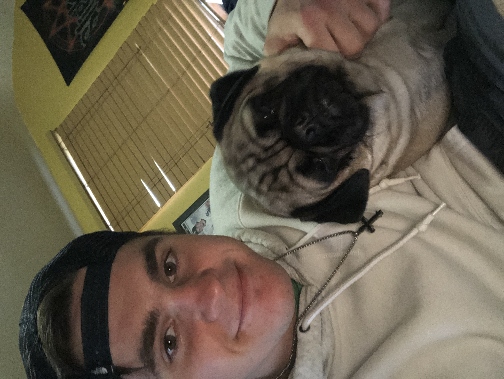

Hi, I'm Jacob Moriarty but you can refer to me as Jake. I am a trasnfer Senior from Moraine Valley Community College in Palos Park where I also switched majors from Political Science to Physics. Arguing with a person that you know fundamentally disagrees with you is like trying to run with one foot nailed down, you don't go anywhere so I switched to physics and it has made me so much happier. I work as a boxing coach at Letz Box Chicago on the Southside of Chicago where I train people to fight and run conditioning classes. I hope to get my masters in particle physics after I get my bachelors where I can then use it to become a medical physicist.
What I Hope to Learn
How to become a more efficient coder
How to optimize data storage
Basics of Artificial Intelligence
My Favorite Hobby
There are a plethora of activities that I would call my hobbies but I think my favorite one is boxing due to the dividends it pays off in all areas of my life. It keeps me in phenomenal shape which enables a clearer mind, forces me to make responsible choices but most of all, the mental strength that I have gained from the sport is insurmountable. I also do have more mellow hobbies other than fighting such as The Sopranos, physics, chess and reading. A multitude of unique components is what best makes for originality in my opinion.
When I was younger, I broke my ankle rather severely resulting in 3 different surgeries ultimately leaving me with 3 screws as well as a plate in my ankle. Now due to the metal, when it thunderstorms out, the electromagnetic energy produced by the storm irritates the metal which gives me a cracky, achey ankle. But also the superpower to tell the weather without any metereological instruments which is neat. 